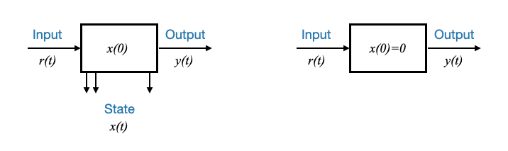
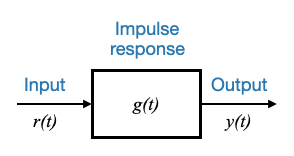
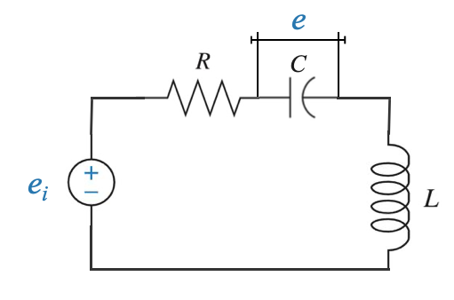
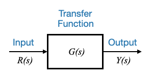
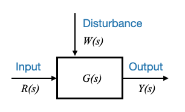

Quando discutiamo di sistemi di controllo, l’importanza della modellazione non può essere sopravvalutata. I modelli sono rappresentazioni matematiche di sistemi e svolgono un ruolo fondamentale nell’analisi e nella progettazione dei sistemi di controllo. Anche se molti di voi potrebbero avere familiarità con alcuni dei modelli di studi precedenti, è sempre una buona idea rivedere e impostare le terminologie e i simboli che utilizzeremo durante il corso.
Domanda popup: Perché la modellazione è importante nei sistemi di controllo?
Risposta: La modellazione fornisce una rappresentazione matematica dei sistemi che ne aiuta l’analisi, la progettazione e la comprensione.
Modello delle variabili di stato
Nella nostra ultima discussione, abbiamo introdotto il concetto di modello delle variabili di stato. Questo modello ruota attorno all’idea che lo stato energetico di un sistema può essere definito utilizzando variabili di stato.
Consideriamo un sistema con variabili di stato \(x_1, x_2, ... x_n\).
La relazione tra queste variabili e le equazioni differenziali del sistema può essere rappresentata come:
Dove \(r\) è la variabile di input e i coefficienti formano le matrici \(A\) e \(B\).
Inoltre, l’equazione di output è:
\[
y = c_{1}x_1 + c_{2}x_2 + ... + c_{n}x_n + dr
\]
L’output è un attributo del sistema ed è ottenuto come combinazione algebrica delle variabili di stato.
Il modello comprende equazioni di stato \(n\) e un’equazione di uscita per un sistema SISO (Single Input Single Output).
Questo è un sistema di ordini \(n-esimo\). L’ordine del sistema è direttamente collegato al numero di variabili di stato.
Nella notazione matriciale, questo sistema può essere rappresentato come:
\[
\dot{x} = Ax+br
\]
e l’equazione di output:
\[
y=cx+dr
\]
Dove: - \(A\) è una matrice \(n \times n\) - \(b\) è un vettore \(n \times 1\) - \(c\) è un vettore \(1 \times n\) - \(d\) è una costante scalare.
Nota: nella rappresentazione a variabili di stato, l’ingresso è indicato con \(u\) o \(r\).
Domanda popup: Cosa rappresenta l’ordine di un sistema? Risposta: L’ordine di un sistema è direttamente collegato al numero di variabili di stato che rappresentano lo stato energetico del sistema.
Modello di risposta all’impulso
Un altro modello fondamentale nei sistemi di controllo è il modello della risposta all’impulso, particolarmente utile per i sistemi lineari tempo-invarianti.
Per questo modello ci sono due condizioni da considerare:
Sistema rilassato: un sistema è detto “rilassato” se il suo accumulo iniziale di energia è pari a zero. Matematicamente, ciò significa che le condizioni iniziali o lo stato del sistema in \(t=0\) sono zero: \(\underline{x}(t=0)=0\)
Relazione input-output: il modello di risposta all’impulso fornisce la relazione tra l’input e l’output di un sistema. Tuttavia, non fornisce informazioni sullo stato del sistema.

Sinistra: modello con variabili di stato; A destra: modello di risposta all’impulso
Il modello di risposta all’impulso non si basa su variabili di stato, tuttavia è estremamente importante e utile nei sistemi di controllo.
Il modello di risposta all’impulso può essere definito dall’integrale di convoluzione.
Cos’è un modello a variabili di stato: un modello a variabili di stato descrive lo stato del sistema \(x(t)\) nel tempo, in base all’input e alle condizioni iniziali.
L’integrale di convoluzione fornisce il valore dell’output \(y(t)\) per tutto il tempo, dato l’input, presupponendo che le condizioni iniziali siano zero.
La risposta all’impulso \(g(t)\) caratterizza completamente un sistema rilassato.
Domanda popup: Quali informazioni fornisce il modello di risposta all’impulso su un sistema? Risposta: Il modello di risposta all’impulso fornisce la relazione tra l’input e l’output di un sistema ma non fornisce informazioni sullo stato del sistema.

Trasformata di Laplace
L’integrale di convoluzione può essere complicato da calcolare nel dominio del tempo. Un’alternativa efficace è utilizzare la trasformata di Laplace, convertendo il problema da un’integrazione nel dominio del tempo a un problema algebrico nel dominio della frequenza (Laplace).
La trasformata di Laplace di una funzione \(f(t)\) è data da:
Poiché stiamo parlando di un sistema causale, la risposta del sistema può avvenire solo dopo l’applicazione dell’input. Per questa ragione: - \(g(t−\tau) = 0\), per \(t<\tau\)
Ciò significa che possiamo estendere il limite dell’integrazione:
\[
y(t) = \int_0^\infty g(t−\tau)r(\tau)d\tau
\]
Poiché \(g(t−\tau) = 0\) per \(t<\tau\), non c’è alcun contributo all’integrale quando \(t<\tau\). Ciò significa che puoi effettivamente estendere il limite superiore dell’integrale all’infinito senza modificarne il valore.
La ragione per cui questo non altera il valore dell’integrale è che anche se l’integrazione è su un intervallo infinito, \(g(t−\tau) = 0\) per \(t<\tau\) garantisce che per qualsiasi valore di \(\ tau\) maggiore di \(t\), l’integrando diventa zero. In sostanza, stai sommando molti zeri.
Nota a margine - Regolazione dei limiti integrali:
Quando si modificano le variabili, è importante regolare i limiti di integrazione.
Per l’integrale interno rispetto a \(t\):
Quando \(t\rightarrow ∞\), \(\theta \rightarrow ∞\) (Limite superiore)
Quando \(\tau = t\), \(\theta=0\) (limite inferiore)
Il limite inferiore dell’integrale rispetto a \(t\) diventa \(\theta=−\tau\). Poiché \(g(\theta)=0\) per \(\theta<0\), ciò significa che la risposta all’impulso è zero prima di \(t=0\) (causalità del sistema). Integrando rispetto a \(\theta\) (in precedenza \(t\)), qualsiasi valore di \(\theta\) inferiore a 0 si moltiplicherà semplicemente per 0 (perché \(g(\theta)=0\)), il che significa che quei valori hanno vinto non contribuiscono in alcun modo all’integrale. Per questo motivo, quando si considerano i limiti di integrazione per \(\theta\), è possibile sostituire il limite inferiore \(\theta=−\tau\) con \(\theta=0\) senza influenzare il valore dell’integrale.
I limiti rimangono gli stessi per questa specifica sostituzione, cioè da 0 a infinito.
Per l’integrale esterno rispetto a \(\tau\) i limiti rimangono invariati (da 0 a infinito).
(poiché \(g(\theta)=0\) per \(\theta<0\) allora \(-\tau\) può essere sostituito con 0)
Nota a margine - Differenziali nella sostituzione di variabile
Quando effettuiamo una sostituzione di variabile nell’integrazione, è fondamentale assicurarsi di comprendere come sono correlati i differenziali. Vediamo la sostituzione effettuata:
$ = t - $
Differenziando entrambi i membri rispetto a $ t $ si ottiene:
$ d= dt - d$
Poiché $ $ è considerato un parametro esterno (non dipendente da $ t $) quando si integra rispetto a $ t $, $ d$ viene trattato come zero durante il processo di differenziazione. Quindi,
$ d= dt $
Ecco perché abbiamo $ dt = d$.
In altre parole, quando $ t $ cambia di una piccola quantità $ dt $, anche $ $ cambia della stessa piccola quantità $ d$.
Abbiamo sostituito la convoluzione con una semplice relazione algebrica, dove:
\(Y(s)\) è la trasformata di Laplace di \(y(t)\).
\(G(s)\) è la trasformata di Laplace di \(g(t)\), nota come funzione di trasferimento del sistema.
\(R(s)\) è la trasformata di Laplace di \(r(t)\).
Domanda popup: Che relazione c’è tra il teorema di convoluzione e le trasformate di Laplace? Risposta: Il teorema di convoluzione afferma che la trasformata di Laplace della convoluzione di due funzioni è il prodotto delle loro trasformate di Laplace individuali.
La funzione di trasferimento è più conveniente per l’analisi e la progettazione rispetto alla risposta all’impulso. Questo perché fornisce una relazione diretta tra ingresso e uscita nel dominio della frequenza, eliminando la necessità di convoluzione.
Funzione di trasferimento e suo significato
Definizione: La funzione di trasferimento \(G(s)\) è la trasformata di Laplace della risposta all’impulso.
Tuttavia, questa definizione non è sempre di utilità pratica perché la risposta all’impulso non sarà sempre disponibile. Di solito ho equazioni differenziali.
Mi piacerebbe avere la funzione di trasferimento direttamente dai modelli di equazioni differenziali.
Possiamo definire la funzione di trasferimento come:
\[
G(s) = \frac{Y(s)}{R(s)}\Big|_{rilassato}
\]
Si noti che il fatto che il sistema sia rilassato è molto importante in questa definizione.
Ciò sarà più conveniente quando avremo un modello del sistema.
Consideriamo ancora il sistema massa-molla-smorzatore:
Abbiamo visto in 03_introduction_to_control_problem come possiamo modellare questo sistema.
\[
M \ddot{x} + B \dot{x} + Kx = F(t)
\]
Se il mio requisito richiede esplicitamente un modello di variabile di stato, utilizzeremo l’approccio discusso in precedenza per averlo nella forma della variabile di stato standard.
Se l’esigenza è invece di averla come funzione di trasferimento possiamo ottenerla applicando direttamente la definizione:
\[
G(s) = \frac{Y(s)}{R(s)}\Big|_{rilassato}
\]
Rapporto del T.F. dell’output e dell’input, assumendo che il sistema sia rilassato.
Questo è il modello della funzione di trasferimento del sistema.
Si noti che quando abbiamo utilizzato il modello delle variabili di stato, abbiamo ottenuto un sistema del secondo ordine (due variabili di stato).
Nel modello della funzione di trasferimento, l’ordine del sistema è definito dalla potenza più alta di \(s\) al denominatore della funzione di trasferimento.
Modellazione del circuito RLC
Rivisitiamo il circuito che abbiamo visto prima.
Ci sono due elementi che immagazzinano energia in questo circuito, il condensatore e l’induttore. Questo sistema sarà rappresentato da un modello del secondo ordine.

Come prima, partiamo dalle equazioni differenziali:
L’equazione del ciclo è data da: \[
R i + e + \frac{Ldi}{dt} = e_i
\]
che possiamo portare sul dominio Laplace come:
\[
RI(s) + E(s) + sLI(s) = E_i(s)
\]
Abbiamo anche una seconda equazione:
\[
i = C\frac{de}{dt}
\]
e possiamo scrivere:
\[
I(s) = sCE(s)
\]
Abbiamo due equazioni algebriche che possono essere facilmente manipolate per avere la funzione di trasferimento.
\[
G(s) = \frac{Y(s)}{E_i(s)}
\]
dove \(Y(s)\) è l’output che dobbiamo definire.
Ad esempio, \(y(t)\) può essere considerato come la tensione ai capi dell’induttore:
\[
y(t) = L\frac{di}{dt}
\]
che devo trasformare di Laplace:
\[
Y(s) = sLI(s)
\]
Abbiamo tre equazioni di cui abbiamo bisogno per avere il modello della funzione di trasferimento.
dove \(m \le n\) (condizione causale/realizzabilità).
Le funzioni di trasferimento possono essere classificate in base all’ordine dei polinomi del numeratore e del denominatore. Per molti sistemi fisici, l’ordine del polinomio del numeratore è solitamente inferiore all’ordine del denominatore, classificato come funzioni di trasferimento strettamente proprie.
Se \(m=n\), la funzione di trasferimento è una vera e propria funzione di trasferimento.
Se \(m<n\), la funzione di trasferimento è una funzione di trasferimento strettamente propria.
Un sistema è realizzabile se \(m \le n\).
Scriveremo anche:
\[
G(s) = \frac{N(s)}{D(s)}
\]
Barra laterale - Scrivere la forma generale del denominatore
Sebbene il polinomio del denominatore abbia spesso il suo termine di ordine più alto con un coefficiente pari a 1 (rendendolo un polinomio Monic), qui non c’è perdita di generalità. Se c’è un coefficiente diverso da 1, può essere normalizzato. Questa rappresentazione è scelta per comodità, come sarà evidente in seguito.
Domanda popup: Perché si potrebbe scegliere di rappresentare il termine di ordine più alto del polinomio del denominatore con un coefficiente pari a 1?
Risposta: questo viene fatto per comodità, poiché semplifica alcune operazioni e rappresentazioni matematiche. Inoltre, qualsiasi funzione di trasferimento può essere riorganizzata per avere questa forma senza perdita di generalità.
Poli e zeri
Le radici del polinomio del numeratore sono chiamate zeri della funzione di trasferimento. Al contrario, le radici del polinomio del denominatore sono chiamate poli della funzione di trasferimento.
Il comportamento di un sistema, in particolare la sua evoluzione dinamica, è profondamente influenzato dai suoi poli. Questi poli, o radici del polinomio del denominatore, sono così centrali nella dinamica del sistema che sono stati chiamati le radici caratteristiche del sistema. Dettano la natura della risposta del sistema. Gli zeri, invece, influenzano principalmente l’ampiezza della risposta.
Domanda popup: Perché i poli sono così vitali nel determinare la natura della risposta del sistema?
Risposta: i poli sono le radici del polinomio del denominatore nella funzione di trasferimento. La posizione e la natura di questi poli determinano la stabilità, il comportamento oscillatorio, lo smorzamento e la risposta ai transitori del sistema. Pertanto, svolgono un ruolo fondamentale nell’analisi del sistema.
Il polinomio \(D(s)\), le cui radici sono i poli della funzione di trasferimento, gioca un ruolo importante nella dinamica del sistema. Per questo motivo \(D(s)\) è detto polinomio caratteristico del sistema.
Il polinomio \(N(s)\), il numeratore della funzione di trasferimento, giocherà un ruolo nel determinare l’ampiezza della risposta.
Espressa in una forma che chiarisce direttamente i poli e gli zeri, la funzione di trasferimento, $ G(s) $, diventa:
Dove: - \(z_i\) sono gli zeri - \(p_i\) sono i poli - \(K\) è la costante di guadagno, pari a $ b_0 $.
Questa rappresentazione è spesso chiamata forma polo-zero.
Diagramma a blocchi input-output utilizzando il modello della funzione di trasferimento
Quando ci viene fornito un modello di funzione di trasferimento, diventa importante comprendere la sua relazione in termini di input e output del sistema. Questa relazione può essere visualizzata in modo efficiente utilizzando diagrammi a blocchi, che offrono una chiara rappresentazione grafica di come interagiscono i vari componenti.
Il diagramma a blocchi di base
Nella sua forma più semplice, lo schema a blocchi che utilizza un modello di funzione di trasferimento è costituito da:
Un ingresso, \(R(s)\), che rappresenta il segnale di ingresso trasformata di Laplace.
La funzione di trasferimento, \(G(s)\), che mappa l’input sull’output.
Un’uscita, \(Y(s)\), che rappresenta il segnale di uscita trasformata di Laplace.

Espansione per includere i disturbi
Anche se lo schema a blocchi di base fornisce un quadro generale, non incapsula ogni possibile influenza su un sistema. In realtà, spesso i sistemi incontrano disturbi, che possono influenzarne notevolmente le prestazioni.
Per modellare questo in modo accurato dobbiamo esplicitamente due tipi di input che agiscono sul sistema:
Input manipolato, \(R(s)\): questo è l’input su cui abbiamo il controllo. Di solito è l’input che manipoliamo per ottenere il comportamento del sistema desiderato.
Disturbo, \(W(s)\): i disturbi sono input che non sono sotto il nostro controllo. Potrebbe trattarsi di qualsiasi cosa, da cambiamenti ambientali, carichi esterni o qualsiasi cambiamento imprevisto che possa influenzare il sistema. I disturbi sono cruciali poiché determinano la robustezza del nostro sistema.

Disturbi nei sistemi
I disturbi sono perturbazioni inevitabili in qualsiasi sistema. Per definizione, un disturbo è qualcosa che non è sotto il nostro controllo. La natura del disturbo non vi è quindi nota, almeno non completamente. Se si sapesse che si potrebbe facilmente ricavare un controller che ne riduca o ne annulli la presenza.
I disturbi possono derivare da varie fonti e possono essere di varia natura. Ad esempio, in un sistema elettrico, i carichi elettrici possono costituire disturbi; in un sistema robotico, le variazioni del carico utile possono agire come disturbi. Nei sistemi termici, le temperature ambientali possono disturbare lo stato desiderato del sistema.
L’obiettivo del controllore sarà quello di filtrare l’effetto dei disturbi.
I disturbi vengono classificati in due categorie principali:
Segnali irregolari con forme d’onda sconosciute, spesso di natura ad alta frequenza. Questi sono solitamente chiamati Rumore. Questi disturbi richiedono una modellazione stocastica. In questo corso non tratteremo la modellazione stocastica.
Segnali a variazione lenta, in cui la natura generale della forma d’onda è alquanto prevedibile.
Esempi: - Variazioni del carico utile in un sistema robotico - Variazioni della temperatura ambientale in un sistema di riscaldamento ambientale - Vento che agisce su un aereo - eccetera.
Questi disturbi possono essere modellati attraverso modelli deterministici.
Domanda popup: In un sistema robotico, in che modo le variazioni del carico utile potrebbero agire come un disturbo?
Risposta: un sistema robotico è spesso progettato per funzionare in modo ottimale con un carico utile specifico. Qualsiasi variazione, sia un aumento che una diminuzione rispetto al carico utile ottimale, può influenzare le prestazioni, l’equilibrio, il consumo di energia e altre dinamiche del robot, agendo quindi come un disturbo.
Tipi di disturbi:
Disturbi esterni: derivano dall’ambiente del sistema. Gli esempi includono il vento che agisce su un edificio, i cambiamenti della temperatura ambiente che influenzano il termostato di una stanza o cambiamenti imprevisti di carico nei sistemi elettrici.
Disturbi interni: si tratta di cambiamenti che si verificano all’interno del sistema ma non fanno parte dell’operazione desiderata. Ad esempio, fluttuazioni di tensione in un circuito elettronico, usura di macchinari o cambiamenti termici interni in un processo.
Modelli di disturbo nei sistemi di controllo
Comprendere i disturbi è fondamentale nei sistemi di controllo. I disturbi possono emergere da diversi scenari, che si tratti di un’improvvisa folata di vento per un aereo o di un improvviso cambio di carico in un impianto elettrico. Ma è possibile modellare matematicamente ogni situazione possibile? Non precisamente. Tuttavia, alcuni modelli possono avvicinarsi molto alle situazioni della vita reale, fornendo informazioni sostanziali sul comportamento di un sistema in caso di disturbi.
Categorie di modelli di disturbo
Sebbene esista una gamma infinita di disturbi, per motivi di analisi e progettazione, possono essere ampiamente modellati come:
Polso e disturbi dell’impulso:
Polso: rappresenta un disturbo costante e di breve durata.
Impulso: rappresenta un disturbo di breve durata e di elevata magnitudo.
Utile per situazioni simili a shock improvvisi.
Esempio: un improvviso picco di tensione in un circuito.
Ad esempio, uno shock improvviso su un sistema potrebbe essere approssimato da un impulso, mentre un disturbo di breve durata potrebbe essere approssimato da un impulso.
import numpy as npimport matplotlib.pyplot as plt# Define the time ranget = np.linspace(-2, 4, 600)# Define a function for the rectangular pulsedef rectangular_pulse(t):if0<= t <=2:return1else:return0# Vectorize the function to allow numpy array inputsvectorized_pulse = np.vectorize(rectangular_pulse)# Get the pulse valuespulse_values = vectorized_pulse(t)plt.figure(figsize=(10, 4))plt.plot(t, pulse_values, 'b', linewidth=2)plt.title("Rectangular Pulse")plt.xlabel("Time")plt.ylabel("Amplitude")plt.xlim([-2, 4])plt.ylim([-0.2, 1.2])plt.grid(True)plt.show()
import numpy as npimport matplotlib.pyplot as plt# Define the time ranget = np.linspace(-2, 2, 400)# Create impulse signalimpulse = np.where((t >-0.01) & (t <0.01), 1, 0)plt.figure(figsize=(10, 4))plt.stem(t, impulse, basefmt=" ") #, use_line_collection=True)plt.title("Impulse Signal")plt.xlabel("Time")plt.ylabel("Amplitude")plt.xlim([-2, 2])plt.ylim([0, 1.2])plt.grid(True)plt.show()
Disturbo del passo:
Magnitudo costante, che imita un cambiamento persistente.
Rilevante per scenari come la variazione del carico elettrico durante le ore serali.
import numpy as npimport matplotlib.pyplot as plt# Define the time ranget = np.linspace(-2, 2, 400)# Create step signalstep = np.where(t >=0, 1, 0)plt.figure(figsize=(10, 4))plt.plot(t, step, lw=2)plt.title("Step Signal")plt.xlabel("Time")plt.ylabel("Amplitude")plt.xlim([-2, 2])plt.ylim([-0.2, 1.2])plt.grid(True)plt.show()
Disturbo della rampa:
Rappresenta un disturbo in continuo aumento o diminuzione nel tempo.
Cattura situazioni in cui una variabile di disturbo va alla deriva.
Disturbo parabolico:
Una modalità più veloce rispetto alla rampa, che rappresenta una deriva più rapida del disturbo.
import numpy as npimport matplotlib.pyplot as plt# Define the time ranget = np.linspace(-2, 2, 400)# Create ramp signal for t >= 0ramp = np.where(t >=0, t, 0)# Create parabolic signal for t >= 0parabola = np.where(t >=0, t**2, 0)plt.figure(figsize=(10, 4))# Plot both signalsplt.plot(t, ramp, lw=2, label="Ramp Signal")plt.plot(t, parabola, lw=2, label="Parabolic Signal")# Add title, labels, legend, etc.plt.title("Ramp and Parabolic Signals")plt.xlabel("Time")plt.ylabel("Amplitude")plt.xlim([-2, 2])plt.ylim([-0.5, 4.5])plt.legend()plt.grid(True)plt.show()
Queste categorie forniscono un buon spettro di disturbi per l’analisi.
È importante notare che questi modelli, sebbene deterministici, sono approssimazioni dello scenario del mondo reale.
Modellazione matematica utilizzando le trasformate di Laplace
Il dominio di Laplace offre un potente strumento per analizzare questi disturbi.
Risposta all’impulso:
\(\delta(t)\) (dove \(\delta\) è la funzione delta di Dirac)
Trasformata di Laplace: \(1\)
Segnale di passo:
Denotato come \(\mu(t)\) (Nota: ci discostiamo dalla solita notazione di utilizzo di \(u\) per evitare confusione con i segnali di controllo.)
Trasformata di Laplace: \(\frac{1}{s}\)
Segnale di rampa:
\(f(t)=t\), per \(t\ge0\) o equivalentemente \(t\mu(t)\)
Trasformata di Laplace: \(\frac{1}{s^2}\)
Segnale parabolico:
\(f(t)=\frac{t^2}{2}\mu(t)\) per \(t\ge0\)
Trasformata di Laplace: \(\frac{1}{s^3}\)
Segnali di comando o di riferimento
Oltre ai disturbi, ci sono segnali di riferimento o di comando. Tieni presente che questi sono spesso noti. Ad esempio, in un sistema di riscaldamento residenziale, il segnale di riferimento è un setpoint di temperatura, come 20°C (un segnale a gradino). Ma in scenari complessi, come il tracciamento radar, il segnale di riferimento (ad esempio la posizione di un aereo nemico) è imprevedibile. I comandi potrebbero anche essere sconosciuti e dobbiamo progettare un sistema che possa essere soggetto a segnali di riferimento sconosciuti.
La strategia, quindi, sta nel progettare sistemi in grado di resistere alle situazioni più faticose. Se riescono in questi, è probabile che otterranno buoni risultati nelle condizioni reali. Pertanto, sebbene impulsi, gradini, rampe e parabole non sempre rispecchino i disturbi della vita reale, agiscono come segnali di test standard efficaci. Le prove sperimentali suggeriscono che i sistemi che funzionano bene con questi segnali di solito funzionano in modo efficiente in condizioni reali.
Questi ingressi, impulsi, gradini, rampe e parabole, sono i modelli sia per i disturbi che per i segnali di ingresso di test standard.